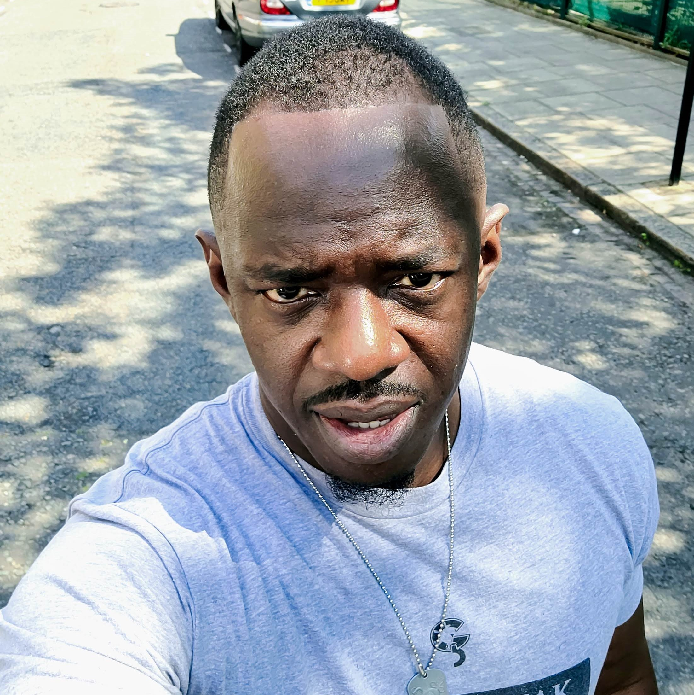
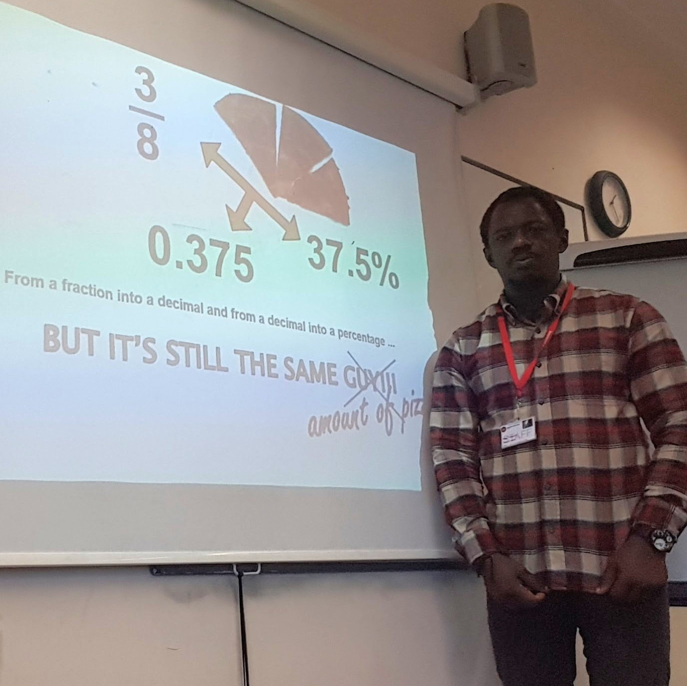
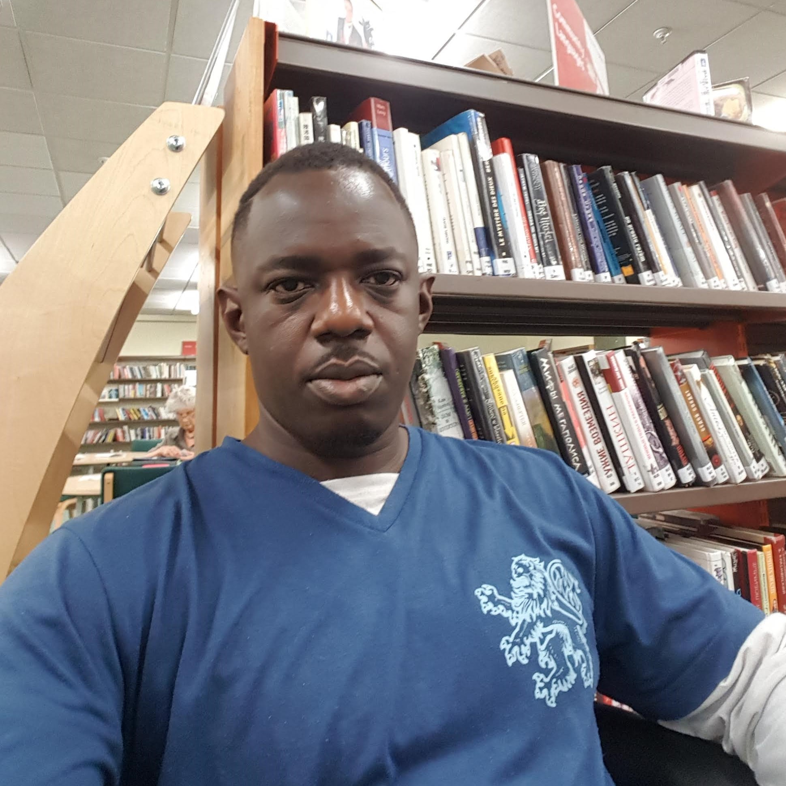

About Me
The Person
I'm Isaac Fabelurin. I live in Islington. Happily married to the most wonderful woman on earth and blessed with the three most wonderful kids in the world. I am British by birth, but was fortunate to have been taken to my parents' country while young, hence benfiting from the richness of my Yoruba heritage. I have experience working as a Civil Servant for ten years before changing career to become a Maths Lecturer in Colleges. I taught there for a while before moving into teaching in local councils.
The Clergyman
In my other life, I am a Pastor and a Priest in a Pentecostal Church in East London. There I tend to pastoral needs of the general congregation but mostly with the young people. This exposes me to youth work the covers much of the community.
The Teacher
I am a Maths teacher with my local council. There, I teach adults (18+) up to GCSEs and Functional Skills Level 2. I also work with learners with special needs
The Student
I love studying, and I have been at it for a long time. My recent foray was studying with the Open University to improve my work chances, whihch is where I came across Web Development for the first time.
The Singer
When I am not doing the aforementioned activities, you will find me in one choir or another. I love listening to music and singing. I am partial to a bit of classical (GF Handel my fav), I love me some gospel, some Afro music or good reggae (Bob Marley!).
Why am I applying for a programme with Founders and Coders
After I stumbled across coding while trying to be more qualified to
teach Maths, I fell in love with it, especially with Web
Development.
Unfortunately, we were not taught the details at the Open
University, and we were expected to have had this knowledge before
applying for the course. In comes the Udemy course which I applied
for. I tried these but it was still too much for me to grasp, yet I
know within myself that these are concepts I can get, only if I
could get the guidance. Since the training with FAC, I have now been
able to understand the concepts, and I am very excited to work in
the industry.
I see this avenue as an opening to a dream come true for me, aand an
opeing to my future.